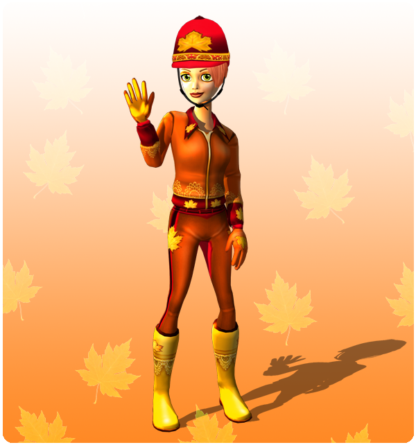
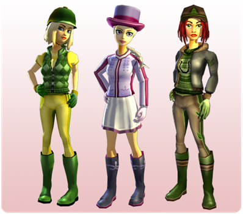

Üdvözlet mindenkinek!
A múlt heti nagy újdonságok után ezen a héten csak egy kis frissítéssel jelentkezünk:
Új gyűjtői ruha:
Egy exkluzív gyűjtői ruha már kapható a Nyugat-Foki Halászfaluban! Ez a Goldenhill-völgy ihlette ruha a Nyugat-Foki Halászfalu nyugati kikötőjének ruhaüzletében kapható.

A Goldenhill ruha a sorozat legújabb darabja, amely már tartalmazza a különleges Bárónő, Firgrove és Pinta Erőd ihlette modelleket!

Jövő héten a magas szintű játékosaink visszatérnek a pályára!
Üdvözlettel: